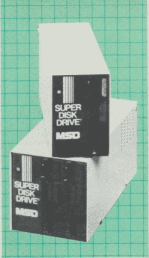
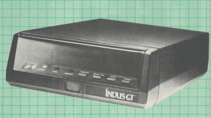
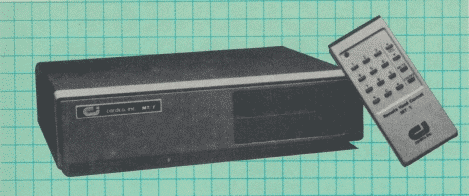
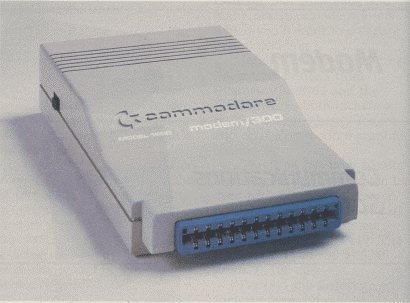
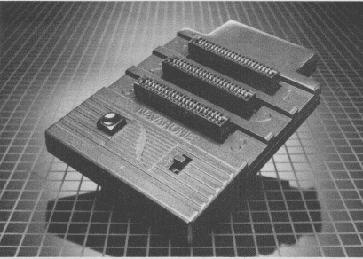

Peripherals can bring much more power and flexibility to your Commodore 64. And they're available as never before. That translates into a multitude of opportunities and changes as you continue to enhance your computer's capabilities. Here's an overview of the expanding peripheral marketplace for the 64.
Once you've made the choice to purchase a Commodore 64 computer, your decisions begin to multiply. If you thought choosing a microcomputer to suit your needs was challenging, you'll soon find yourself overwhelmed by the peripheral options open to you. Even experienced computer owners discover it's hard to stay abreast of the rapidly growing inventory of peripherals designed for the 64.
But this proliferation of products means that some people are making mistakes, says Tom Dow, product manager for Commodore's Computer Systems Division, "It's obvious - but a very important consideration for people who are buying 64s or any computer - that they get involved with applications that are really going to benefit them. It's important for people to understand what they need to du and get themselves plugged into a product that is best going to suit those needs." And that means before you make peripheral purchases which may be two or even three times the cost of the 64 itself.
Many people buy peripherals without first fully understanding what they are going to do with them, how they interact with the Commodore 64, and what software is to be used, adds Dow.
If you follow the general rule that a peripheral is any piece of hardware which can be plugged into your computer to enhance its function, the list of such products includes literally hundreds of items from scores of manufacturers. The good news is that there's plenty of information at hand for the discerning consumer. And the peripheral options really aren't difficult to categorize and compare if you'll take the time to think through your choices and your needs.
There are basically five major categories of peripherals for nicest microcomputers, including the 64. When you begin to think about building a system around your computer, your choices include the following:
Let's take a look at some of the changes affecting these peripheral product lines for the Commodore 64.
Commodore officials were pleasantly surprised during l984 by a significant change in the buying patterns of 64 owners looking for storage devices. Over 90 percent of these purchases from Commodore were 1541 disk drives rather than the more inexpensive Datassette recorders.
"That was one of the things that really threw us for a loop," says Commodore's Dow. "The percentage of people who actually bought disk drives to go with the 64 was very high." Commodore was caught by surprise and there was a period about a year ago when 1541s were in very short supply.
Since there are some other sources for inexpensive cassette tape drives compatible with the 64, it would be wrong to presume that the 90 percent figure would apply throughout the Commodore 64 marketplace. However, the combination of low price (about $250 for the 1541), the relatively faster access times of a disk drive over tape, and the trend toward putting more and more commercial software on disk rather than cassette has dramatically altered the situation.
"For the majority of the people who purchase the 64, the first buy will be the disk drive," says Dow. "When the 64 first came out, there was a lot of software on cartridge since there was skepticism about how many people would purchase the disk drive." That is true no longer.
As any Commodore 64 owner quickly learns, the computer accesses data from a cassette tape drive in a sequential manner. The tape slides by the read/record head in a linear fashion. You can't get to the third program on a tape without winding past the first two programs. The disk drive, however, is a random access device. The read/write head can jump from spot to spot on a disk much as a record player needle can be placed anywhere on the surface of a record. Such accessibility and speed have proven too attractive for most 64 owners to ignore.
Although the first purchase for 64 owners may be a disk drive, that doesn't necessarily mean it will be the 1541. As the installed base of Commodore 64s has increased, the peripheral marketplace has become crowded with competitors. And that includes disk drive manufacturers.
|  |  |
| The MSD Super Disk Drives | The Indus GT disk drive |
MSD's dual drive, the Super Disk II, is more expensive than two single Commodore drives - about $695 - but will reportedly format, copy, and verify in less than two minutes what two 1541s would need 35 to 40 minutes to complete. The single-drive Super Disk I is priced at $399.
Other disk drives now available for the 64 are the $399 Indus GT from Indus Systems, which is reportedly 400 percent faster than the 1541, and the $369 Commander II from Commander Electronic Systems. Here again, as with the MSD drives, there are price/performance tradeoffs in relation to Commodore's 1541 drive.
While the competition heats up between 64 disk drive manufacturers, there is a clear move away from the slower sequential access tape drives which so dominated during the early days of the VIC-20 and 64. As the market matures, so do the tastes and demands of 64 owners.
For those who wish to use a cassette drive, Electronic Components of Elma, New York, has engineered a way for you to save even more money. Rather than buying a Commodore Datassette recorder, the company offers the Computer Patch Cord (CPC-1000), a $29.95 cord which lets you use a 64 or VIC-20 with an ordinary cassette recorder.
Another surprise for officials at Commodore last year was the popularity among 64 owners of the 1702 color video monitor, It became, on average, the next most-purchased Commodore peripheral after storage devices. "Again, we were relatively shocked with the percentage of people who wi11 buy the 1702," says Dow. "It boils down to a number of different reasons. Obviously, resolution is much better on the 1702 than it would be on a television set. The second thing we've found - although we give the proper hookup requirements to attach a 64 to a television set a lot of people don't like to tie up their TV set with the computer. So by buying the 1702 monitor, it gives them the ability to have a dedicated work station without interrupting a television set."
Just as inexpensive tape drives bring you functionality at a low price, so your television set can bring you a computer's video images without additional expense. All you need to do is attach the RF modulator to your black and white or color TV, and you're in business.
Commodore 64 owners are turning toward disk drives for much the same reason they're now using dedicated video monitors in increasing numbers: greater performance for more serious applications. Especially with the rising interest in productivity programs such as word processors, data bases, and spreadsheets, owners of the 64 are more often asking for the greater clarity of a video monitor. Even on the best color television sets, an 80-column line of printed characters (now available in several word processor and spreadsheet formats for the 64) is all but unreadable. Not so with the variety of video monitors on the market from companies like Cardco, Commodore, Roland DG, Samsung, Teknika, Amdek, Sakata, and others.
Some Commodore 64 owners are opting for both color television and the high-quality of direct video monitors. Cardco's $199.95 MT/1 Monitor Tuner, for example, is a remote-controlled, 60-channel, cable-ready tuner which provides separate video and audio output matched to composite input computer monitors. It works with any color or monochrome monitor, transforming it into a television set with the flip of a switch.
|  |
| Cardco's monitor tuner offers television for you monitor at the flip of the switch. |
While the choice between monitors and television sets is usually an easy one, no peripheral for your Commodore 64 is likely to be trickier to choose than a printer. The many different companies, the various types available (dot matrix, daisy wheel, thermal, thermal transfer, ink jet, etc.), and the continuing price cuts by manufacturers make this an exciting but potentially frustrating decision for the 64 owner. We'll discuss the ins and outs of buying and using a printer in an upcoming issue, but for now a few warnings should help you in your search.
Compatibility is the watchword here. Ignore it and you may wind up taking home a printer which at best doesn't fully use the power of the 64 and at worst is almost worthless. The built-in graphics characters which are directly accessible from the 64 keyboard, for example, can't be reproduced by some printers, at least without the addition of a ROM chip or some other modification. Before you begin to look for a printer, decide on what your uses are likely to be. That will make the tradeoffs on price, performance, compatibility, and other factors much easier to assess.
If you want to print program listings, an inexpensive printer will suit your needs. For letters or business applications, you'll need a printer that handles standard paper (single sheets or formfeed) and offers correspondence-quality characters. And make sure the software you own will work with the printer you choose.
Commodore currently offers three dot-matrix printers for the 64, the MPS-801, the MPS-802 (an enhanced version of Commodore's 1526 printer), and the new MPS-803. "Someone who is doing more in the business or productivity end of applications normally will buy the MPS802," says Dow. "We're seeing the MPS-803 being bought by individuals interested in the educational and recreational aspects of the product itself - more of an all-purpose printer because it does standard text printing, but also has the capability to do dot-addressable graphics."
As the 64 became the clear leader among home computers in 1984, printer manufacturers raced to provide the best print quality at the lowest price for 64 owners. That is continuing, making your purchase of a printer a potentially formidable task. Companies such as Alphacom, Blue Chip Electronics, Cardco, C. Itoh, Epson, Ergo Systems, Leading Edge, Okidata, Star Micronics, and many others provide printers which you'll want to compare before deciding.
Joining the list are two new dot-matrix printers from Riteman: the R 64 and the Riteman C+. Both include a built-in Commodore interface and offer Commodore graphics characters.
The R 64 has both parallel and serial capacity, so it can be used with other computers as well as the 64. It prints at 120 cps and employs bit image graphics. It sells for $449. The Riteman C+, priced at $349, prints at 105 cps.
Perhaps the fastest growing area of home computing is telecommunications - the sending and receiving of data between computers.
"This is really becoming a very hot item, not just for Commodore, but for the industry in general," says Commodore's Dow. "And I think we're going to find more demand for modems as we find more and more people offering different types of services. Modem sales for us have been strong, and it's going to get stronger as time goes on."
The modem is simply a device which modulates digital data from your computer into analog sound transmissions carried by the telephone lines, and then demodulates those same type of analog signals when your 64 receives data from another computer via the phone. There are two types of modems. An acoustic modem has rubber cups into which your telephone's handset fits and sends signals acoustically through the telephone; a direct-connect modem plugs directly into the phone lines, as its name implies. Acoustic modems are older and less reliable, and are therefore being superseded by the newer direct-connect devices.
|  |
| Commodore's new 1660 Automodem. |
You should be aware that the 64's RS-232 (a Recommended Standard, hence RS) serial port - through which your modem will communicate - is not compatible with the industry-accepted RS-232 port. Make sure that the modem you buy is compatible with the 64, or you'll have to buy an adapter to make it work.
Commodore now offers three different modems, each of which connects directly into the 64's user port, but offers different capabilities. The 1600 VICModem (about $50 - $70) and the 1650 AutoModem (about $79 - $100) have been joined by the 1660 AutoModem (about $100). The latter two allow your computer to automatically redial numbers when necessary and to automatically answer incoming calls from other computers. In addition, the 1660 has a speaker built into it so that you can monitor the audio status of the modem. It works with the Plus/4 as well as the 64 and VIC-20, notes Dow.
In addition to the Commodore modems, there are a variety of 64-compatible modems that have become available from other manufacturers. Human Engineered Software (HES) manufactures two HESmodems, one priced at $74.95 and the other at $109.95. Anchor Automation now offers the $99 Westridge 64-20 modem, Taroco is selling the $99.95 Mitey Mo, and other modems by Intec Corporation, MFJ Enterprises, Inc., and The Microperipheral Corp., are all compatible with your 64 without the need for an interface. (See "A Buyer's Guide To Modems" in the November 1984 GAZETTE for more detailed information.)
The expanding base of peripherals for the 64 includes a variety of input devices. As more and more people have been brought into the world of computing, an increasing percentage are unaccustomed to typing, and hence, keyboards. Children especially can find the array of 67 different keys on the Commodore 64 a daunting and frustrating means by which to learn about computers.
To combat this problem, a number of companies have come out with products aimed at easing a child's first exposure to computers. Simplified plastic keyboard overlays are now being used in many early learning programs, such as in CBS Software's Sesame Street series. Koala Technologies released the Muppet Learning Keys in 1984, a plug-in pad which features easy-to-use letters, numbers, colors, and other functions.
"Alternative input devices are becoming more and more important as time goes on in just about every segment of the marketplace, particularly the home," says Dow. "We're working on a variety of different forms of input devices."
At last year's Consumer Electronics Shows, for instance, Commodore displayed its Touch Screen, a plastic overlay which fits over the front of a monitor or television set. By touching the screen with your finger or a pointer you gain access to menus and other controls in a variety of programs. Although not yet released, the Touch Screen - in some form - is expected to be available soon, perhaps by the time you read is, notes Dow.
Even novice computer users are at least somewhat familiar the joysticks, game paddles, touch tablets, keypads, and light pens which are the most familiar alternative input devices. Making decisions about these peripherals is usually not difficult as is the case with printers, modems, or storage devices. But, as with all peripherals, what you plan to do with them can make the difference between wasted money and a genuinely useful addition your 64 system.
Among the newer input devices are music keyboards which, with accompanying software, make use of the Commodore 64's Sound Interface Device (SID) chip. Companies like Passport, Sight & Sound, Tech Sketch, Sequential Circuits, Waveform, and others are selling a variety of these keyboards, with prices generally round $200 or less. (See 'Commodore 64 Music For Non-Musicians" in the February GAZETTE.)
Over the past year or so, the mouse - a rolling desk-top device which controls the screen cursor and other onscreen functions - has become a very popular alternative input device for Apple, IBM, and some other computers. While Commodore reportedly has no plans to develop a mouse, a number of other companies are rumored to plan to produce them for the 64.
Beyond the five major peripheral categories mentioned here, there are still many more products which can make substantial differences in what you can do with your 64. Memory expansion devices, surge suppressors,
|  |
| Navarone's $39.95 three-slot catridge expander for the 64 lets you plug in up to three cartridges that are switch selectable. |
The U.S. home and office personal computer peripherals market will probably reach $26.4 billion in retail value by 1989, according to figures compiled by Future Computing, Inc., a respected computer market research firm. That's a $17.3 billion increase over the 1984 figure. The choices will continue to increase as manufacturers take advantage of the huge installed base of Commodore 64s.
With proper planning and a clear understanding of your needs, choosing peripherals can be another interesting aspect of computing rather than an expensive exercise in frustration.
While space limitations prohibit us from listing addresses for all of the companies mentioned in this article, the following should help you get started:
Published in COMPUTE!'s Gazette, Issue 21, March 1985. Copyright © 1985 COMPUTE! Publications, Inc.
| This page has been created by Sami Rautiainen. | |
| Read the small print. | Last updated September 05, 2020. |
{kind=link}